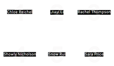

Thinking with Collections
David Odo, Lecturer on Anthropology, Department of Anthropology, Harvard University
Director of Student Programs and Research Curator of University Collections Initiatives, Harvard Art Museums
Seminar Members
1. Chloe Reichel, Mather House ’15, Social Studies
2. Jiayi Li, Kirkland House ’15, Economics
3. Rachel Thompson, Winthrop House ’16, Social
Anthropology and Comparative Literature
4. Showly Nicholson, Pforzheimer House ‘16, East Asian
Languages and Civilizations
5. Snow Rui, Winthrop House ’15, Archaeology
6. Sara Price, Adams House ’16, History and Science
Anthropologists have to varying degrees been interested in the social nature and the making of works of art and other material objects since the founding of the discipline, especially in objects created outside of Western societies, which have instead been the traditional domain of art historians. In art history, recent years have witnessed a shift toward a more global scope of research and away from Eurocentric definitions of what constitutes art, even as anthropological interest in all forms of art and art making continues to expand into areas once considered exclusively art historical domains.
During the spring 2015 semester, David Odo taught Thinking with Collections , an undergraduate seminar offered in Harvard University’s Department of Anthropology. In the seminar, students considered these disciplinary shifts in material anthropology and art history by working directly with objects from the Harvard Art Museums, the Peabody Museum of Archaeology and Ethnology, and other collecting entities at Harvard University, in a variety of artistic, cultural, and historical contexts. Provoked by the exhibition Jesse Aron Green: Ärztliche Zimmergymnastik (on view, Level 3, May 23, 2015–August 9, 2015) students were challenged to think about the human body, particularly how it has been constructed as an object of modernity.
As part of the seminar, students met with Jesse Aron Green, and with Fernanda Fragateiro, Shuddhabrata Sengupta (of the Raqs Media Collective), and Renée Green, as part of the series What Is to Be Undone? Modernism in the 21st Century organized by the Harvard Art Museums. This series considered how artists today use a variety of research methodologies to reimagine the lasting and conflicted legacies of modernism in the contemporary moment. Artists discussed how they interrogate specific objects as a site of exchange, contestation, restitution, and critique in their research and their artistic practice.
The installation here presents brief audio notes from each student as they consider this semester-long research project surrounding an object of their choosing. Three projects on the top row and three projects on the bottom row can be played using a remote control, available on a shelf in this gallery (on a wall to the left of this screen). Press any of the six buttons on the remote control to hear each student talk about their research. Each audio clip lasts 2-3 minutes and briefly summarizes the student’s questions and approach as they began to research collection objects.
